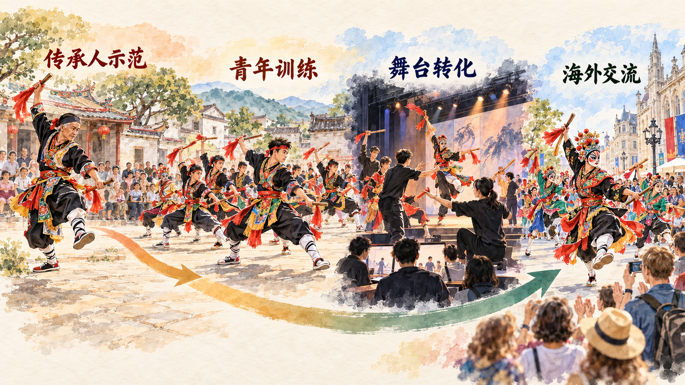
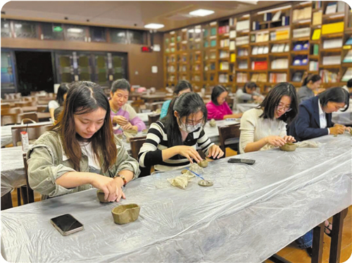
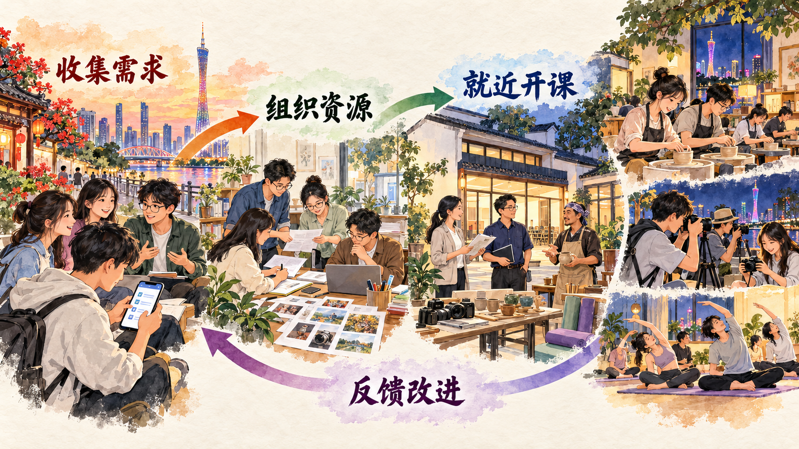

文化发展既要守住根脉，也要面向当代生活创造新表达。传统文化保护、公共文化服务、文化产业和国际传播承担不同任务，又共同服务人民精神文化需要和文化强国建设。本节从传承发展、事业产业和文化影响力三个方面，观察文化资源转化为现代生活内容的机制。
一、传承发展中华优秀传统文化
中华文明具有突出的连续性、创新性、统一性、包容性、和平性。传承发展中华优秀传统文化，需要保护文物、古籍和非物质文化遗产，也需要恢复文化资源同当代生活的联系。社区中的节庆与技艺传授、学校中的经典教育、博物馆中的展览阐释、数字平台中的新表达，构成不同的传承空间。
创造性转化着重改造仍有借鉴价值的内涵和陈旧表现形式，赋予时代内涵和现代表达；创新性发展着重依据时代进步补充、拓展和完善文化内涵。两者都以准确理解传统为前提，通过内容、形式、技术和传播的创新，使中华优秀传统文化同现代社会相协调、同人民生活相连接。
参考资料｜创造性转化与创新性发展
潮汕英歌进入现代剧场时，可以观察两类任务。槌法、阵形、人物气质和集体力量构成技艺与精神的核心，需要在专业舞台上得到准确呈现；村落巡游的空间、时长和观看关系则需要根据剧场条件重新组织。舞剧加入侨批和当代青年寻根叙事，使地方文化经验进入更完整的舞台故事。
创造性转化处理传统内容与现代形式之间的衔接，创新性发展进一步形成新的主题、作品和传播场景。传承人提供技艺与文化判断，编导组织戏剧结构，青年演员完成身体训练，观众反馈推动作品调整。传统文化由此通过多主体协作形成当代表达。
资料来源：文化和旅游部国家艺术基金《舞剧〈英歌〉在深圳首演》，2025 年 2 月 28 日；广州市文化广电旅游局舞剧《英歌》巡演材料。
案例研究｜英歌从村落广场进入现代舞台
广州歌舞剧院创排舞剧《英歌》时，没有把英歌动作简单搬进剧场。创作团队邀请普宁英歌和甲子英歌国家级代表性传承人参与指导，把快板、中板、慢板中的步法、槌法和阵形逐项拆开，让专业舞蹈演员重新学习身体重心、力量节奏和人物气质。传承人负责判断动作是否保持英歌韵味，编导则要解决剧场叙事、灯光音乐和群舞调度。
舞剧以侨批和当代青年寻根组织故事。传统英歌的集体力量进入海外华侨与家乡联系的叙事，青年角色在寻找文化根脉的过程中理解家族、乡土与国家。原本在街巷中随队伍移动的观看方式，被转换为固定舞台上的场景推进；锣鼓、槌法和阵形仍然承担辨识度，人物关系和舞台语言帮助不熟悉英歌的观众进入故事。
舞台转化之外，英歌仍在真实社区中保持生命力。2025 年春节期间，潮阳英歌队赴德国、法国开展 5 场专场演出。队员在城市公共空间面对不同语言背景的观众，表演之外还需要通过主持介绍、现场互动和媒体内容解释人物、服饰与动作。广东方面公布的演出及传播覆盖面超过 50 万人次。海外观众先被节奏、阵形和力量吸引，再通过导赏接触背后的文化意义。

这条路径包含多个环节：乡土队伍保存技艺和社区关系，传承人提供判断标准，专业院团形成舞台作品，青年演员投入长期训练，国内外观众在观看与交流中认识英歌。传统文化在核心精神、技艺规范和时代叙事之间建立联系，形成能够继续发展的文化生命。
讨论题
- 把村落巡游改编成剧场舞蹈，需要保留哪些核心元素，又需要调整哪些叙事和舞台表达？
- 传承人和专业编导在创作中分别提供哪些知识，两类判断怎样协调？
- 海外观众不熟悉英歌人物和历史背景时，现场演出、导赏与短视频可以分别承担什么传播任务？
资料来源：文化和旅游部国家艺术基金《舞剧〈英歌〉在深圳首演》，2025 年 2 月 28 日；广州市文化广电旅游局舞剧《英歌》巡演材料；文化和旅游部《汕头潮阳英歌舞出海展现中华文化独特魅力》，2025 年 2 月 13 日。
二、繁荣发展文化事业和文化产业
文化事业重在保障人民基本文化权益，公共图书馆、文化馆、博物馆、基层文化空间和公共数字文化服务向社会提供普惠文化资源。文化产业通过创意、生产、流通和消费形成多样文化产品与服务。二者运行机制不同，社会效益始终处于首位，并在满足人民文化需求、激发文化创新创造方面相互促进。
公共文化服务需要从群众真实需求出发。服务主体了解不同年龄、职业和社区的时间安排与兴趣，组织场地、师资和课程，再通过参与反馈持续改进。文化产业则需要尊重创作规律和市场规律，把文化资源转化为高质量作品与产品，使社会价值、艺术价值和经济价值相统一。
参考资料｜文化事业、文化产业与公共文化服务
文化事业以社会效益和基本文化权益为主要目标，资金主要来自公共投入和社会支持，常见载体包括公共图书馆、文化馆、博物馆公益开放和基层文化活动。文化产业以文化内容和创意服务形成产品，通过市场交换实现持续生产，出版、演艺、影视、游戏、设计和文创都可以进入产业链。
公共文化服务是文化事业面向公众的重要形式。评价青年夜校，需要观察需求是否真实、参与是否便利、课程是否优质、服务是否可持续；评价一部商业演出，还要观察作品质量、观众接受和市场运行。两类供给可以共享空间、人才和数字平台，在不同机制中共同丰富人民精神文化生活。
资料来源：《中华人民共和国公共文化服务保障法》；统编教材第十章第四节。
案例研究｜广州青年夜校的课程供给链
周五晚上，海珠区一间书院里，青年陶艺师把陶土分到学员手中，从揉泥排气到拉坯塑形逐步示范。学员下班后赶来，有人想学习手工技能，有人希望在两小时专注操作中放松情绪，也有人借课程认识同一社区的新朋友。青年夜校面对的文化需求十分具体：时间需要避开工作日白天，地点需要靠近居住和交通节点，课程需要兼具知识、体验和社交。
广州在越秀、海珠、白云、增城等区开展文明（青年）夜校试点。开课前，组织者通过线上问卷、社区走访和青年座谈会收集需求，区分兴趣培养、技能提升、文化熏陶和社交拓展，再形成“基础课程＋特色课程”的供给。课程包括理论学习、手机摄影、Vlog 制作、美妆基础、非遗陶艺、糖画、插花、心理减压和中医养生。夜间与周末排课，使在职青年和亲子家庭能够参与。
课程落地需要多方资源。党群服务中心、社区邻里之家、新时代文明实践阵地、少年宫和岭南书院提供空间；高校、企业、行业协会、非遗代表性传承人和志愿者提供师资；组织者负责招生、排课、材料和反馈。越秀区两处教学点自 2025 年 9 月起开设 6 期、24 个普惠课程班次，服务约 300 人次，学员以 20 至 40 岁青年为主，职业包括企业职员、青年教师、社区工作者、自由职业者和年轻父母。
海珠区从 2025 年 10 月至 2026 年 2 月设置理论宣讲、文化艺术、科学普及、志愿为老、环境公益五个模块，开设 23 门课程，服务 700 余人。全市 2025 年累计开展特色课程 40 余门、200 余场次，服务超过 1.1 万人次。课程结束后的出勤、评价和新需求继续进入下一轮设计，形成“群众提出需求—组织整合资源—社区就近开课—参与反馈改进”的供需闭环。


讨论题
- “群众点单、夜校上菜”需要收集哪些需求信息并组织哪些资源？
- 免费或普惠课程的质量和持续运行可以通过哪些机制保障？
- 如果在中山大学周边设计一门青年夜校课程，你会选择什么内容，并用什么方式验证真实需求？
资料来源：广州市人民政府门户网站转载广州日报《广州在多区试点开办文明（青年）夜校 探索新时代文明实践“夜模式”》，2026 年 3 月 2 日。
新闻摘录｜一枚凤冠冰箱贴带动文物进入青年生活
2025 年 3 月 25 日，中国国家博物馆凤冠冰箱贴累计销量突破 100 万件，凤冠 IP 全系列文创产品销售额超过 1 亿元。它的原型是明孝端皇后九龙九凤冠，冠上镶嵌红、蓝宝石百余颗、珍珠四千余颗。复杂文物进入日常用品，首先需要从历史信息、造型结构、色彩和工艺中提取可识别元素。
设计团队开发金属款和木质款冰箱贴，又延伸出笔记本、毛绒玩具、马面裙、雪糕和音乐盒等 20 余款产品。消费者把冰箱贴放在宿舍、冰箱和工位，拍照分享后又回到博物馆页面寻找原型。文化产品由此形成一条双向路径：馆藏文物为设计提供内容，日常产品把消费者重新带回文物历史。
100 万件产品还连接设计、打样、生产、质量控制、库存、销售和售后。中国国家博物馆材料显示，凤冠系列带动上下游协同，创造超过千人的就业机会。文物价值通过设计进入产业链，产业能力又让文化创意稳定转化为可获得的产品。
2025 年 5 月，国博开放面向青年的复合型文化交往空间，把 8 件馆藏文物、图书、文创产品和可触摸互动装置放在同一空间。青年既可以了解文物，也可以阅读、交流和体验设计，单件商品带来的兴趣进一步进入完整的文化学习场景。
讨论题
- 凤冠冰箱贴保留了原型文物的哪些文化信息，又进行了哪些适合日常使用的设计转化？
- 一件文创产品从设计稿走向 100 万名消费者，需要博物馆、设计师、生产企业和销售平台完成哪些协作？
- 如果为中山大学博物馆设计一件文创产品，你会选择哪件藏品，并把它转化成什么日常用品？
资料来源：中国国家博物馆《让文物活起来 把文创带回家》，文化和旅游部网站，2025 年 3 月 27 日；中国国家博物馆《中国国家博物馆开放空间打造青年文化自信新场域》，文化和旅游部网站，2025 年 5 月 14 日。
三、不断提升国家文化软实力和中华文化影响力
文化影响力来自真实发展、优质内容和有效传播。讲好中国故事，需要提炼中国实践中的思想和经验，以可信、可爱、可敬的形象呈现中国。国际传播面对不同历史背景和知识结构的受众，既要准确表达中国立场，也要选择能够引发理解的故事、人物和艺术形式。
提升国际传播效能需要形成多主体、立体式传播格局。新闻媒体提供事实和解释，学术机构形成知识成果，文艺作品创造审美经验，社会组织和普通青年通过交流建立具体联系。英歌海外演出、博物馆文创和青年志愿服务都表明，中华文化影响力在内容质量、现场互动和长期交往中逐步形成。